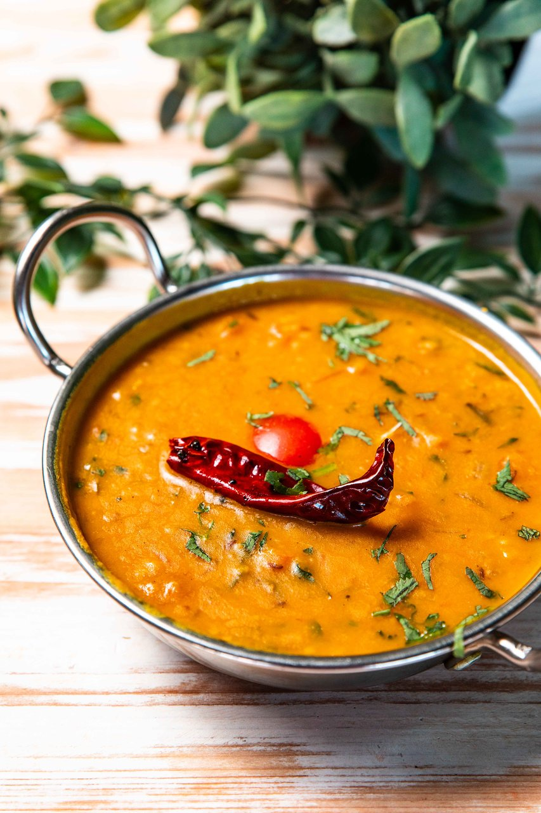

Yellow dal Tadka

INGREDIENTS
- Servings 4For Dal
- Channa dal (boiled) – 3 cups
- Water – 2cups
- Ghee – 1tbsp
- Chilli powder – ½ tsp
2nd Tempering
For tempering
- Ghee – 2tbsp
- Heeng – ½ tsp
- Dry red chilli – 2nos
- Cumin – 1tsp
- Garlic chopped – 1tbsp
- Green chilli slit – 2nos
- Onion chopped – ¼ cup
- Ginger chopped – 2tsp
- Turmeric – ½ tsp
- Chilli powder – ½ tsp
- Tomato chopped – ¼ cup
- Salt – to taste
- Coriander chopped –
- Lemon wedge – 1no p
- Wash the chana dal with water and soak it for half hour. Add this soaked dal with 5cups of water and a pinch of turmeric to a pressure cooker. Cook till the dal is tender but not mashy.
- In a pan heat ghee and add heeng, dry red chilli and give a quick stir. Sprinkle cumin and once it pops add in chopped garlic and cook till starts to brown. Next goes a green chilli with chopped onions. Stir and cook onions for a minute. Add ginger and give a light saute.
- Sprinkle turmeric, chilli powder and give a stir and add chopped tomatoes with salt. Cook the tomatoes for 2mins. Add the boiled dal in the pan along with some extra water. Bring to a boil and then simmer for 3mins approx, correct seasoning and add coriander and squeeze a lemon wedge.
- Remove the dal into a bowl. In a fresh pan heat ghee and chilli powder. Immediately remove from heat, stir and add this tempering over the ready dal. Serve it hot with flat breads, chapati or paratha.